Gocator (GoPxL) 快速使用指南
📝 手册更新日志 (Changelog)
| 说明书版本 | 更新日期 | 更新者 | 更新说明 |
| V1.0 | 2026-04-13 | RuiYi Chen | 细化了操作步骤和指示说明，增加了插图 |
| V0.9 | 2026-04-09 | Alfred Pu | 丰富开箱连线、网络启动与快速出图指南，补充图文结构 |
| V0.8 | 2026-04-01 | Alfred Pu | 完成纯文字版本，还需要截图 |
欢迎使用 GoPxL！本指南涵盖了从硬件开箱、连线配置到最终输出数据的核心步骤，帮助您快速上手 Gocator 传感器。
1. 开箱与硬件概览 (Unboxing & Hardware)
拿到 Gocator 传感器后，请先熟悉设备外观及主要接口：
- 光学窗口：包含顶部的 CAMERA（激光接收窗口）和前侧的 LASER EMITTER（激光发射窗口）。
- 指示灯状态面板：包含 POWER（电源指示灯）、RANGE（范围指示灯）、LASER（激光指示灯）以及网口状态灯，用于快速确认设备运行状态。
- 尾部接口：
- I/O CONNECTOR (I/O连接端子)：用于连接编码器输入、外部触发输入以及数字/模拟/序列输出。
- POWER & LAN CONNECTOR (电源及网口连接端子)：用于连接电源（24V/48V）、以太网通信以及激光安全互锁。
{kind=link}
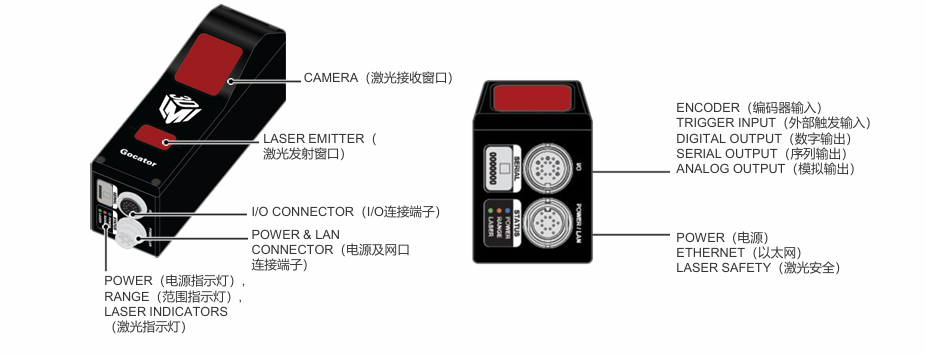
2. 硬件连线与上电 (Wiring)
Gocator 提供了两种主要线缆，请根据线缆颜色和用途进行正确连接：
{kind=link}
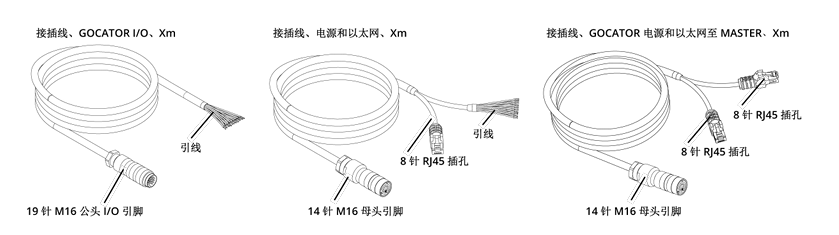
2.1 主线缆连接 (Power & Ethernet)
- 识别线缆：此线缆通常为黑色，一端为传感器连接头，另一端分叉。
- 连接电源：将裸线端接入 24V 或 48V 直流电源。请严格注意正负极。
- 接地线 (PE线)：线缆中包含一根金属编织的接地线（PE线），务必将其与大地或机柜地牢固连接，以抵抗工业现场干扰并确保安全。
- 以太网连接：将 RJ45 水晶头端接入工控机（PC）的网口或千兆交换机。
{kind=link}
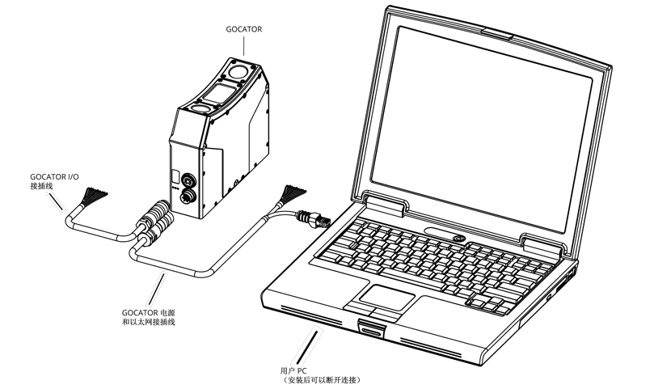
需要增加master和交换机，同时线缆更换成双网口线。
{kind=link}
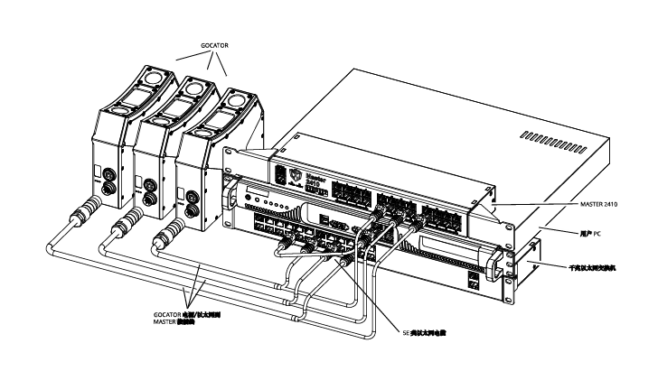
2.2 I/O 线缆连接（可选）
- 识别线缆：I/O 线缆通常为灰色 。
- 连接触发/编码器：用于连接外部接触发端（I/O Open Wire），例如高/低电平触发信号（3.3V-24V）或 5V 差分编码器信号 。
接线注意事项
- 扭矩限制：连接传感器端子时请用手拧紧，扭矩不要超过 2 Nm。
- 线缆换向：如空间紧凑使用弯头线缆，该接头支持每 90 度换一次方向，方便走线 。
{kind=link}
{kind=link}
{kind=link}
3. 网络配置与启动 (Network & Bootup)
传感器上电后，需要配置电脑 IP 以建立通信并进入系统，相关工具包可在官网下载。
步骤 1：查找传感器 IP
- 在 PC 端运行
GoPxLDiscovery.exe。 - 软件将扫描并显示当前连接的传感器序列号（SN）及其默认 IP 地址（例如
192.168.1.10）。
{kind=link}
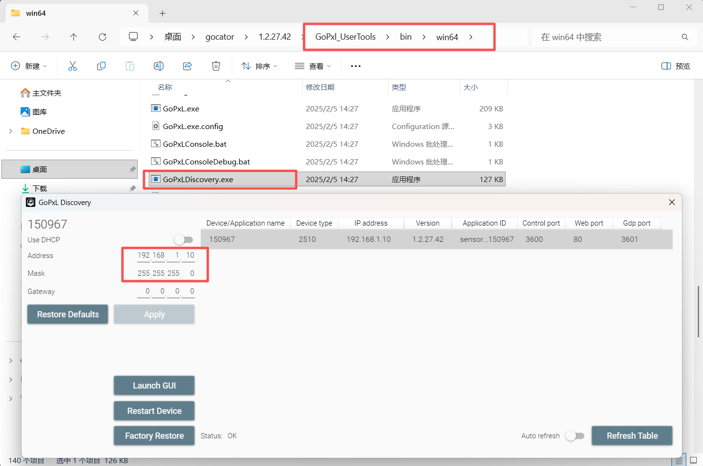
步骤 2：电脑网卡设置
为了能访问传感器，电脑网卡必须与传感器处于同一网段 。
- 打开电脑的网络设置 -> 传感器对应的网口 -> 属性 -> IPv4 属性。
- 将 IP 手动设置为
192.168.1.xxx（xxx∈(0~255)且≠传感器IP最后一位，但前三位需与传感器一致），子网掩码设为255.255.255.0。
{kind=link}
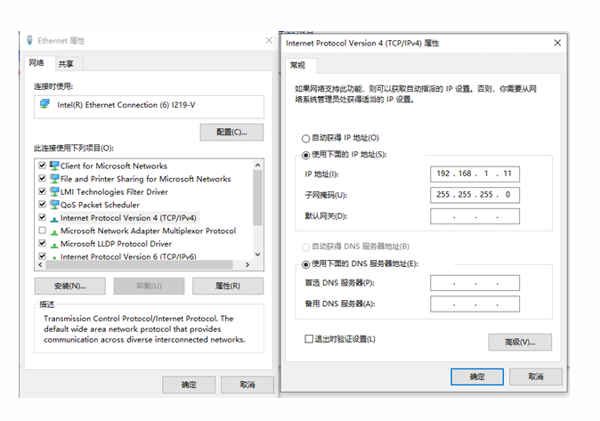
{kind=link}
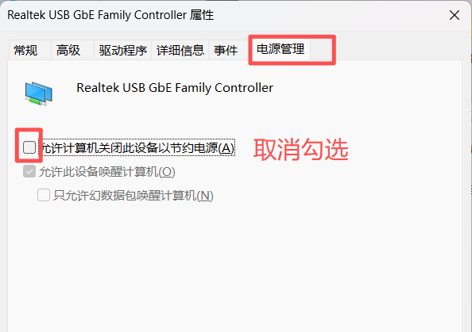
{kind=link}
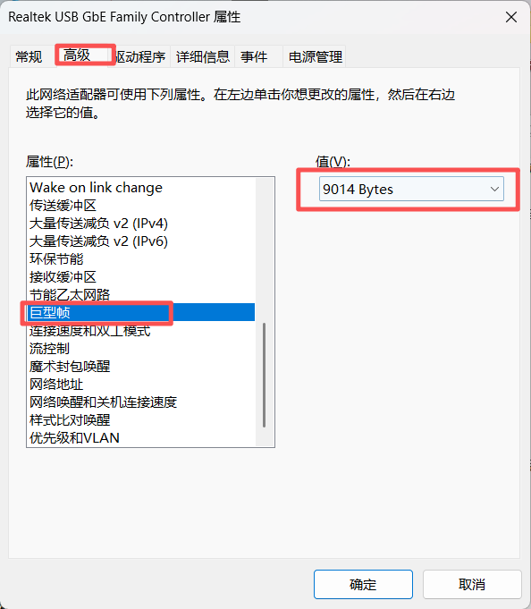
{kind=link}
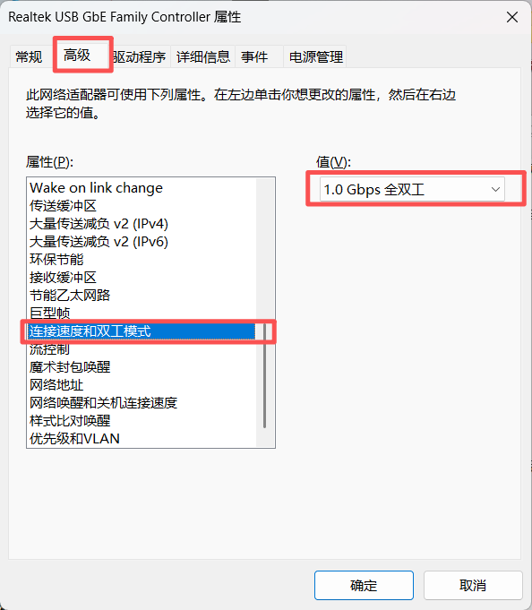
步骤 3：登录 Web 调试界面
- 推荐浏览器：谷歌 Chrome、火狐或 Edge。建议暂时关闭防火墙和杀毒软件 。
- 在浏览器地址栏输入传感器的 IP（如
192.168.1.10）并回车，即可进入 GoPxL 调试软件界面 。 - 设置中文：在界面右下角点击语言选项（默认显示
EN），选择中文(简体)。
{kind=link}
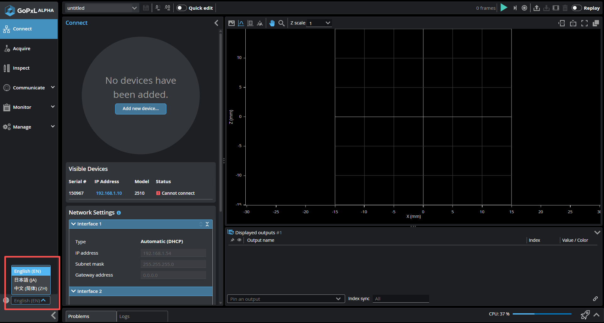
使用 GoPxL加速器 提升性能
如果扫描速度要求极高或点云数据庞大，传感器内置 CPU 可能会遇到瓶颈。此时可运行 GoAccelerator (加速器)，将运算转移到电脑 CPU 上。开启后，需使用本地电脑 IP 加上 8100 端口（例如 http://192.168.1.54:8100）来访问提速后的网页界面 。
🚀 线激光连接 GoPxL 加速器步骤：
- 运行：双击鼠标左键运行 GoPxL.exe 程序，随后可以在桌面右下角的任务栏（系统托盘）找到它的运行图标。
{kind=link}
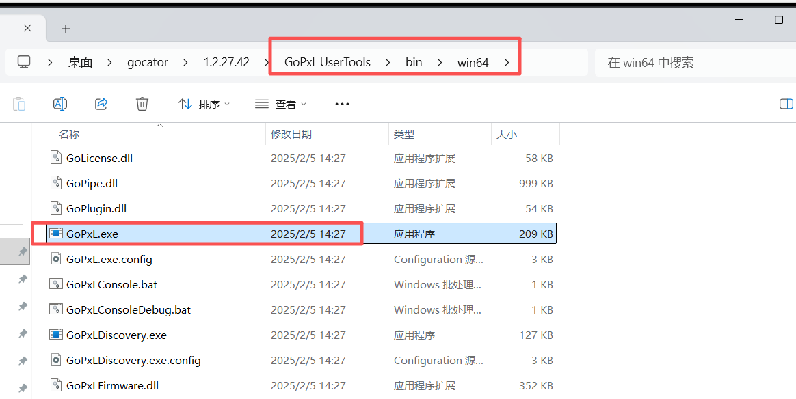
- 设置：点击 "Add"，选择传感器对应的网口 IP，然后依次点击 "OK" -> "Start" -> "Launch"，系统会自动在浏览器中打开配置网页。
{kind=link}
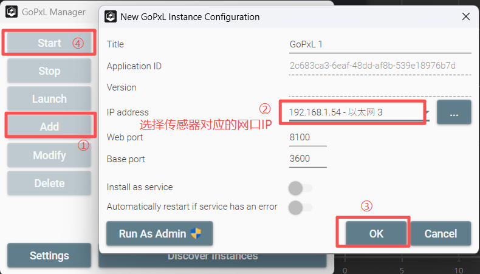
- 添加：在打开的网页中，依次选择 "Design" -> "Add New Sensor..." -> "Gocator Laser Profiler"，勾选列表中找到的传感器，最后点击 "Add Sensor"。
{kind=link}
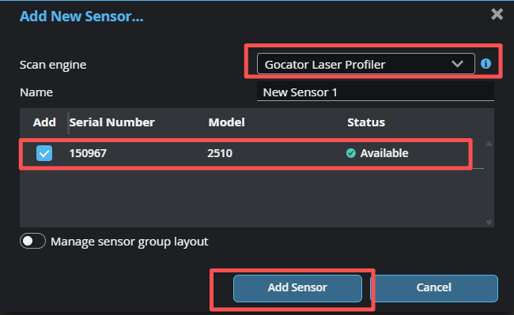
- 验证：添加完成后，可以在页面上查看传感器的连接状态，确认加速器已成功接管。
{kind=link}
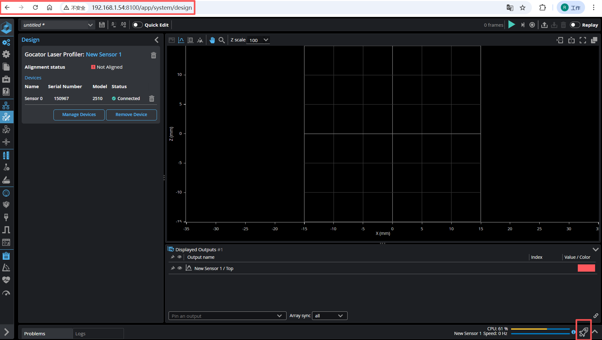
4. 快速出图与扫描设置 (Acquire)
成功登录界面后，导航至顶部的 Acquire (采集) 页面来获取您的第一张图像。
扫描模式 (Scan Mode)
- Image (图像/视频模式)：首次出图建议先使用此模式。它仅用于查看原始 2D 反射图像，方便您调节激光曝光度和验证物理焦距，不产生 3D 数据。
- Profile (轮廓)：用于截面测量（线激光），输出 2D 轮廓线。
- Surface (表面)：通过目标或传感器的相对移动，拼接生成完整的 3D 点云或高度图。
曝光调节与出图 (Exposure)
- 将工件放置在传感器激光线正下方，启动传感器。
- 选择 轮廓模式，触发模式选择 时间模式，调整 Exposure (曝光) 时间大小，确保激光线在画面中清晰且连续。
- 调节传感器或样件的高度，直到被测表面的轮廓线在视野中间，此时高度是最合适的。具体的扫描设置详见下一章扫描成像(超链接待插入)。
5. 保存设置 (Manage -> Jobs)
非常重要
所有的设置更改在传感器断电后都会丢失！请务必将其保存为 Job (任务) 文件。
{kind=link}
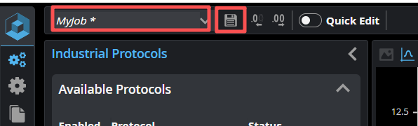
- 保存任务：点击顶部全局工具栏的 保存 (Save) 图标，或在 Manage > Jobs 页面中保存。
- 切换任务：在生产不同型号的产品时，可以通过 Web 界面或 PLC 命令快速加载不同的 Job 文件。